Timing Belt: Service and Repair
Timing Belt / Illustrated Index:
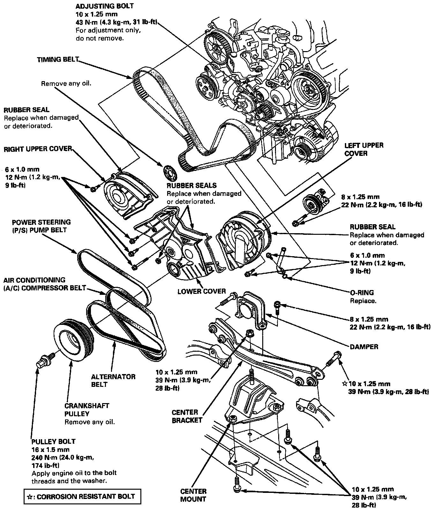
Removal
CAUTION: Inspect the water pump when replacing the timing belt.
NOTE:
- Turn the crankshaft so that the No.1 piston is at top dead center.
- Before removing the timing belt, mark direction of rotation if it is to be reused.
- Anti-theft radios have a coded theft protection circuit. Be sure to get the customer's code number before:
* Disconnecting the battery.
* Removing the No.56 (7.5 A) fuse in the under-hood fuse/relay box.
* Removing the radio.
- After service, reconnect power to the radio and turn it on. When the word "CODE" is displayed, enter the customer's 5-digit code to restore radio operation.
1. Disconnect the negative terminal from the battery.
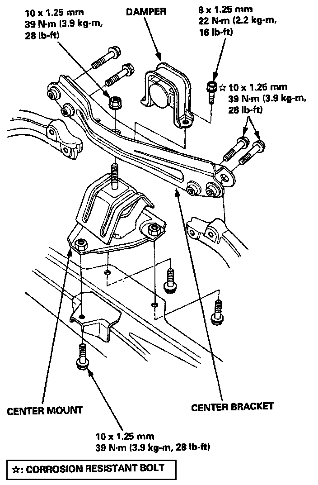
2. Remove the damper, center bracket and center mount.
3. Remove the TCS upper and lower brackets.
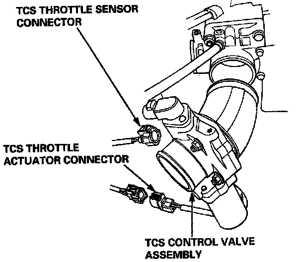
4. Disconnect the TCS throttle sensor connector and TCS throttle actuator connector, then remove the TCS control valve assembly.
Do not disconnect the breather pipe bypass hose.
5. Remove the wire harness covers.
6. Remove the engine wire harness.
7. Remove the oil pressure switch connector.
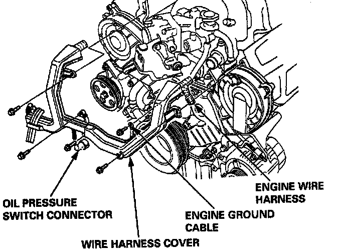
8. Remove the engine ground cable.
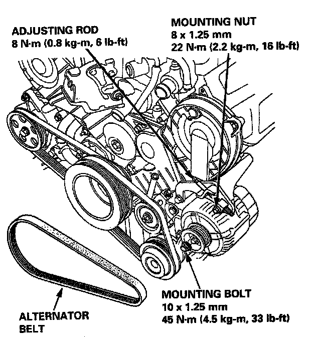
9. Loosen the mounting nut/bolt and adjusting rod, then remove the alternator belt.
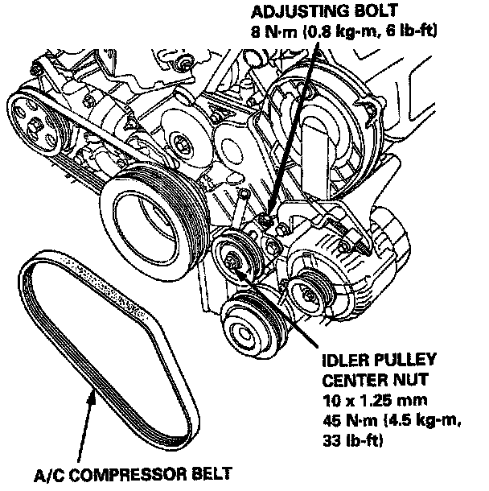
10. Loosen the idler pulley center nut and adjusting bolt, then remove the A/C compressor belt.
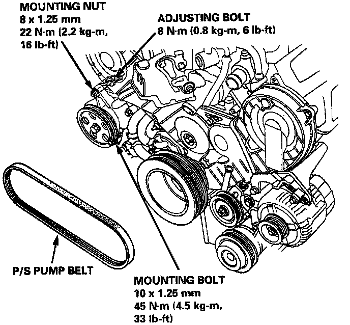
11. Loosen the mounting bolt/nut and adjusting bolt, then remove the P/S pump belt.
12. Remove the upper covers.
Crankshaft Pulley Bolt Replacement:
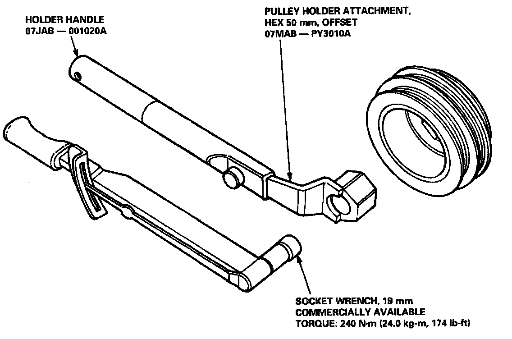
13. Remove the crankshaft pulley.
14. Remove the A/C idler pulley.
15. Remove the dipstick pipe.
16. Remove the lower cover.
17. Loosen the timing belt adjusting bolt 180°.
18. Push the tensioner to release tension from the belt, then retighten the adjusting bolt.
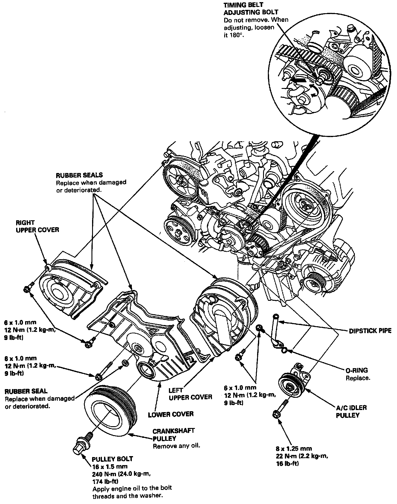
19. Remove the timing belt from the pulleys.
Installation
CAUTION:
- Do not rotate the crankshaft or camshafts with the timing belt removed. The pistons may hit the valves and cause damage.
- When installing the timing belt, turn the crankshaft pulley clockwise 15° past No.1 piston TDC. After adjusting the left and right camshaft pulleys to TDC, turn the crankshaft pulley counterclockwise back to TDC.
- Inspect the water pump when replacing the timing belt.
1. Install the timing belt in the reverse order of removal;
Only key points are described here.
2. Remove all spark plugs.
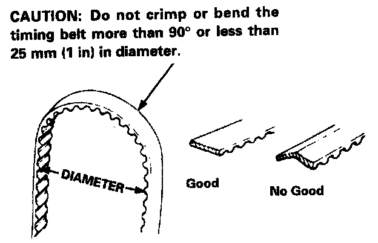
3. Position the crankshaft and the camshaft pulleys as shown before installing the timing belt.
A. Set the crankshaft so that the No. 1 piston is at top dead center. Align the (triangle) mark on the teeth side of the timing belt drive pulley to the pointer on the oil pump.
B. Align the TDC mark on the left camshaft pulley to the pointer on the left back cover.
C. Align the TDC mark on the right camshaft pulley to the pointer on the right back cover.

4. Install the timing belt tightly in the sequence shown.
(1) Timing belt drive pulley (crankshaft)
(2) Adjusting pulley
(3) Left camshaft pulley
(4) Water pump pulley
(5) Right camshaft pulley.
For easy installation, advance the right camshaft pulley by about a half tooth from the TDC position.
5. Loosen the adjust bolt, and retighten it after tensioning the belt.
6. Install the tower cover and crankshaft pulley.
7. Rotate the crankshaft about 5 or 6 turns clockwise so that the belt may fit in position on the pulleys.
8. Carry out timing belt tension adjustment.
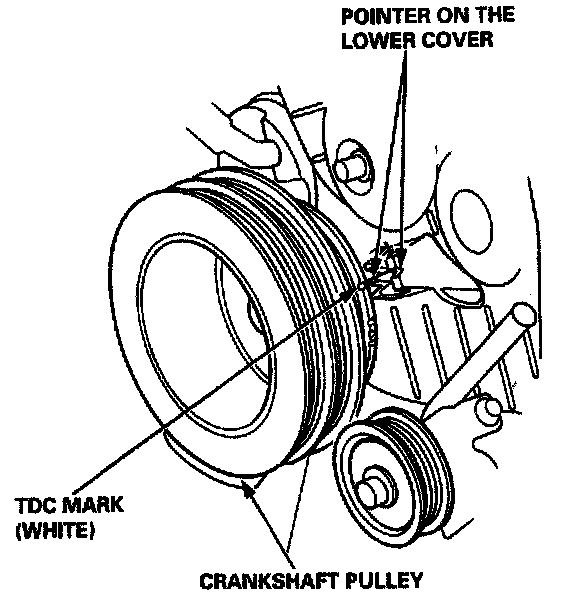

9. Check the crankshaft pulley and the camshaft pulleys at TDC.
10. If the camshaft pulleys are not positioned at TDC, remove the timing belt and adjust the position, then reinstall the timing belt.
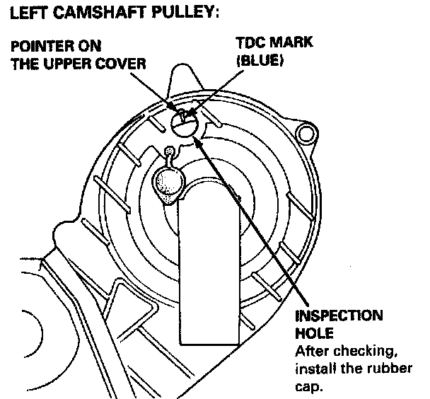
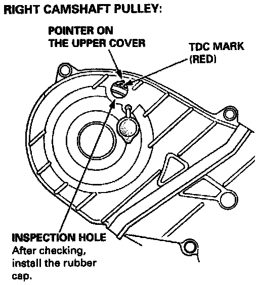
11. After installation, adjust the tension of each belt.
- See Charging System for alternator belt tension adjustment.
- See Steering System power steering belt tension adjustment.
- See Heating and Air Conditioning Systems for air conditioner belt tension adjustment.